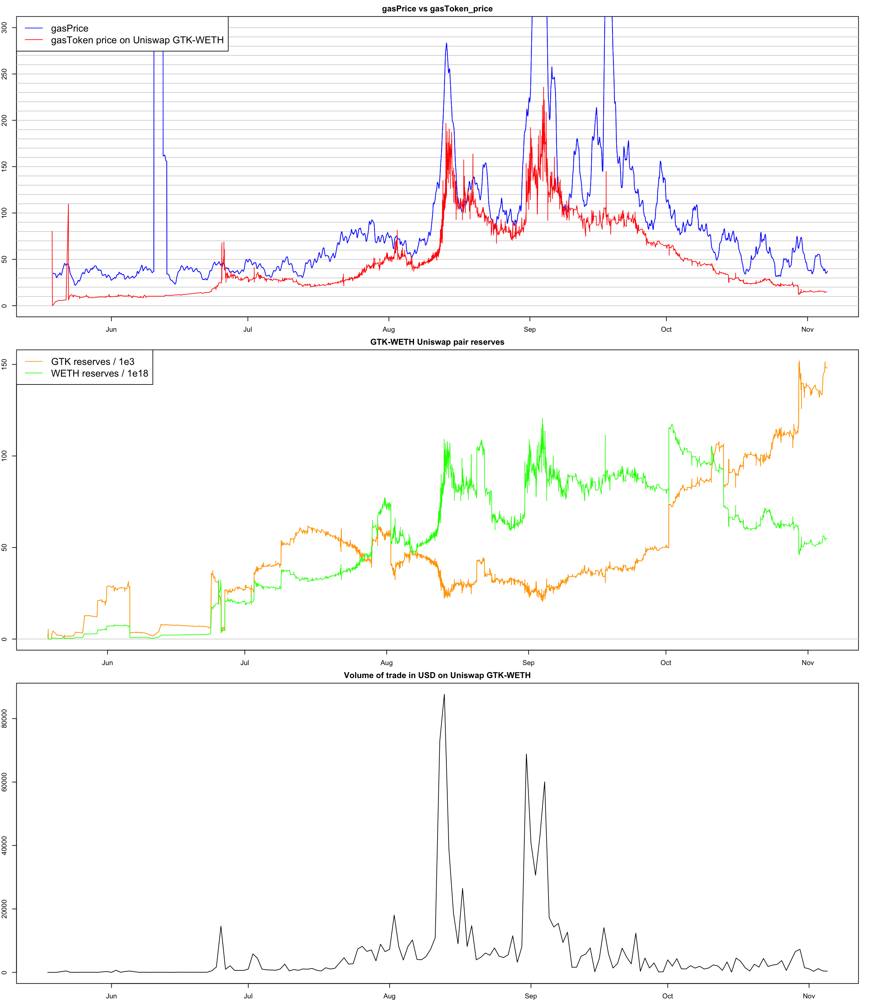
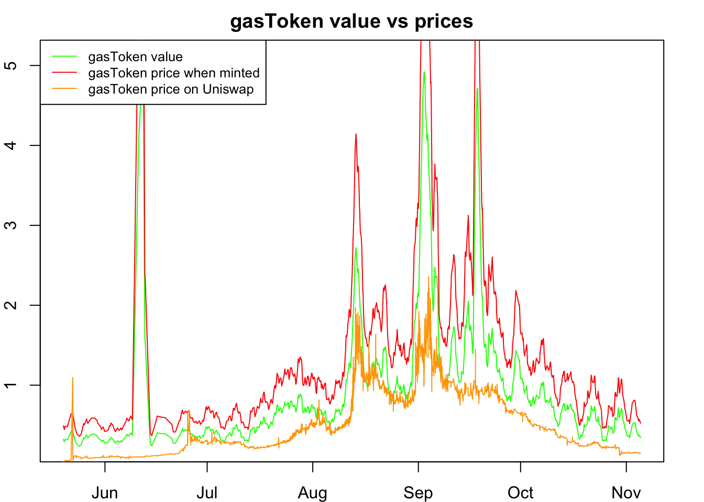

gasToken pair gasToken / WETH https://info.uniswap.org/pair/0x27c64bdca05d79f6ee32c3e981dc5153d9d794cd
SELECT block_timestamp, reserve0, reserve1
FROM blockchain-etl.ethereum_uniswap.UniswapV2Pair_event_Sync
where contract_address="0x27c64bdca05d79f6ee32c3e981dc5153d9d794cd"
and date(block_timestamp)>="2020-01-01"require(data.table)## Loading required package: data.table## Warning: package 'data.table' was built under R version 3.5.2t=fread("/Users/henry/Desktop/perso/eth0/gasprice/gasToken-weth-pair-2.csv")
t[, reserve1 := as.numeric(reserve1)]
t[, priceGasToken := reserve1/reserve0 * 400 / 1e18 * 100]
t[, datetime := strptime(substr(block_timestamp, 1, 16), "%Y-%m-%d %H:%M")]## Warning in strptime(substr(block_timestamp, 1, 16), "%Y-%m-%d %H:%M"):
## strptime() usage detected and wrapped with as.POSIXct(). This is to minimize
## the chance of assigning POSIXlt columns, which use 40+ bytes to store one date
## (versus 8 for POSIXct). Use as.POSIXct() (which will call strptime() as needed
## internally) to avoid this warning.t = t[order(datetime)]SELECT SUBSTR(STRING(block_timestamp), 1, 13) as date_time, avg(gas_price) as gas_price
FROM bigquery-public-data.crypto_ethereum.transactions
where date( block_timestamp)>="2020-05-18"
group by date_timeg =fread("/Users/henry/Desktop/perso/eth0/gasprice/gasprice-june-nov.csv")
g = g[order(date_time)]
g[, datetime := strptime(date_time, "%Y-%m-%d %H")]## Warning in strptime(date_time, "%Y-%m-%d %H"): strptime() usage detected and
## wrapped with as.POSIXct(). This is to minimize the chance of assigning POSIXlt
## columns, which use 40+ bytes to store one date (versus 8 for POSIXct). Use
## as.POSIXct() (which will call strptime() as needed internally) to avoid this
## warning.g[, gas_price := round(gas_price/1e9, 2)]
library(zoo)##
## Attaching package: 'zoo'## The following objects are masked from 'package:base':
##
## as.Date, as.Date.numeric# moving average over last 30 data points (1 hour or so)
g[, gas_price_ma := frollmean(gas_price, 30)]
# volume of trade, from swaps on same pair
swaps = fread("/Users/henry/Desktop/perso/eth0/gasprice/gasToken-weth-pair-swaps.csv")
swaps = swaps[order(block_timestamp)]
swaps = swaps[, list(volume = sum(as.numeric(amount1In)/1e18 * 400)), by=substr(block_timestamp, 1, 10)]
# ===================================
# PLOT
par(mfrow=c(3,1), mar = c(2, 2, 2, 2))
# First plot
g[, plot(datetime, gas_price_ma, ylim=c(0,300), col="blue", type="l", main="gasPrice vs gasToken_price")]## NULLfor(i in seq(0,300,10)) abline(h=i, col="lightgray")
g[, lines(datetime, gas_price_ma, ylim=c(0,300), col="blue")]## NULLt[, lines(datetime, priceGasToken, col="red")]## NULLlegend("topleft", legend=c("gasPrice", "gasToken price on Uniswap GTK-WETH"),
col=c("blue", "red"), lty=1:1, cex=1.4)
# Second plot
# show reserves on uni pool
t[, plot(datetime, reserve0/1000, type="l", col="orange", main="GTK-WETH Uniswap pair reserves")]## NULLfor(i in seq(0,200000,10000)) abline(h=i, col="lightgray")
t[, lines(datetime, reserve0/1000, col="orange")]## NULLt[, lines(datetime, reserve1/1e18, col="green")]## NULLlegend("topleft", legend=c("GTK reserves / 1e3", "WETH reserves / 1e18"),
col=c("orange", "green"), lty=1:1, cex=1.4)
# add volume of trades
swaps[, plot(as.Date(substr), volume, type="l", main="Volume of trade in USD on Uniswap GTK-WETH")]
## NULLgasToken value is given by the javascript code at https://gastoken.io/
MINT_BASE = 32254; MINT_TOKEN = 36543; FREE_BASE = 14154; FREE_TOKEN = 6870; REIMBURSE = 24000;
The value is the part REIMBURSE which is 24000 gas, which depends on the gas price at the time it is used. The price of the gasToken depends if it is minted, or bought on Uniswap for example.
Let’s calculate those, and plot:
g[, x := substr(datetime, 1, 13)]
t[, x := substr(datetime, 1, 13)]
setkey(g, x)
setkey(t, x)
r = t[g]
r = r[!is.na(priceGasToken)][!is.na(gas_price_ma)]
r[, gasToken_Value := 24000 * gas_price_ma * 1e9 / 1e18 * 400]
r[, gasToken_Price_Mint := 36543 * gas_price_ma * 1e9 / 1e18 * 400]
r[, gasToken_Price_Uniswap := reserve1/reserve0 / 1e18 * 400]
par(mfrow=c(1,1), mar = c(2, 2, 2, 2))
r[, plot(datetime, gasToken_Value, col="green", type="l", main="gasToken value vs prices")]## NULLr[, lines(datetime, gasToken_Price_Mint, col="red")]## NULLr[, lines(datetime, gasToken_Price_Uniswap, col="orange")]## NULLlegend("topleft", legend=c("gasToken value", "gasToken price when minted", "gasToken price on Uniswap"),
col=c("green", "red","orange"), lty=1:1, cex=0.8)